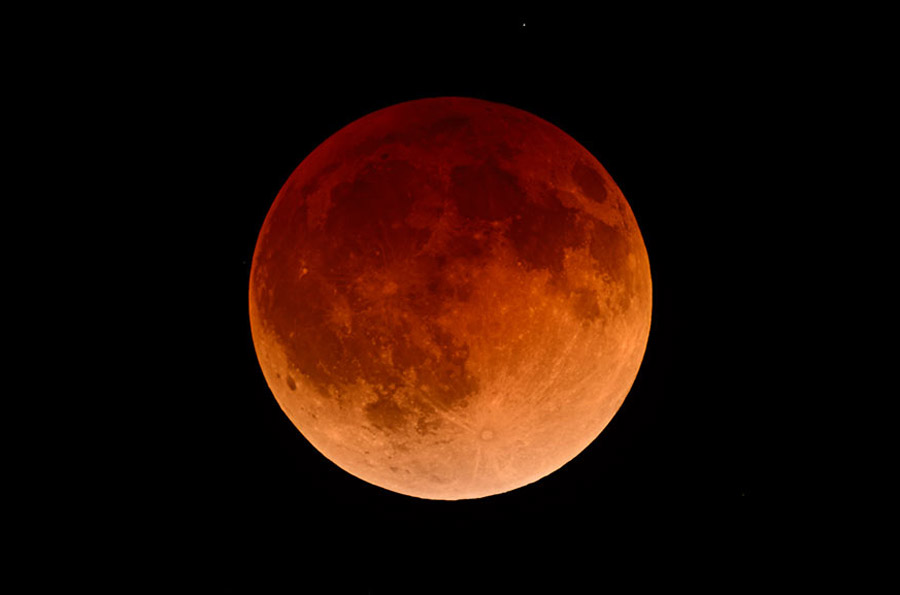
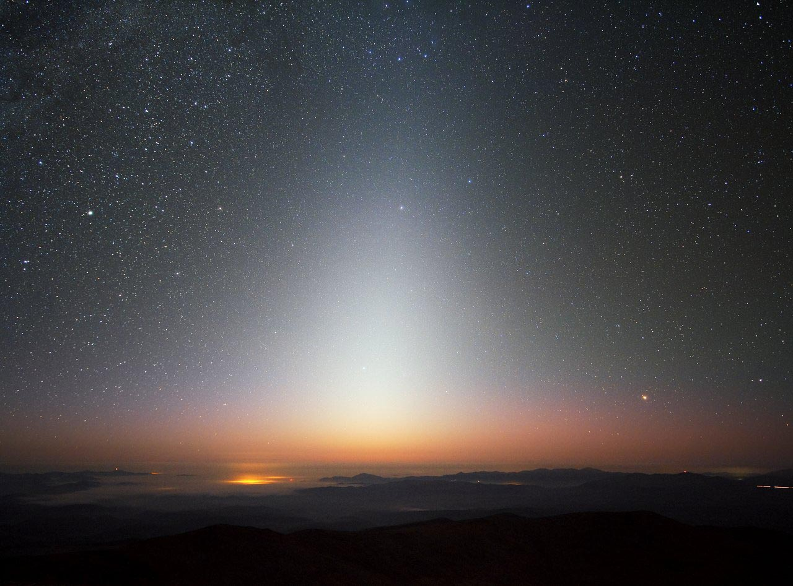

Что можно увидеть на небе
Что можно увидеть на небе, кроме Солнца, звезд и облаков? Примерно такой вопрос нередко задают люди, сталкиваясь с любителями астрономии, увлеченно что-то рассматривающими на небе.
На самом деле этот вопрос можно разделить на два.
Что можно увидеть на небе ночью, и что видно на дневном небе. Давайте посмотрим вместе!
Звезды
Прежде всего ясной ночью на небе видны звезды. К сожалению, в городах небо сильно засвечено уличным освещением, и потому наблюдать можно только самые яркие звезды. Если вы хотите увидеть звездное небо таким, каким его видели наши бабушки и дедушки, нужно выбраться хотя бы за 10-20 км от города. Если ночь прозрачная, вы сможете наблюдать две или три тысячи звезд.
У звезд есть интересная особенность — их взаимное расположение на небе остается неизменным на протяжении сотен и тысяч лет. Это позволило людям еще в глубокой древности объединить звезды в группы и рисунки для удобства ориентирования на небе. Такие группы называются созвездиями. За тысячи лет существования созвездия практически не поменяли своих очертаний.
Вы сможете быстро запомнить все основные созвездия на нашем небе, если захотите. Их не так много — всего 15-20 созвездий. Что это даст? Всегда приятно знать, на что ты смотришь. Заодно вы научитесь ориентироваться на небе и даже на местности.
 .
.
Луна
Луна видна не всегда, так как довольно быстро перемещается по небу с запада на восток. Первую неделю после появления она видна по вечерам, следующие 2 недели наблюдается по ночам, а последнюю неделю — на утреннем небе.
По мере движения Луна меняет фазы освещенности: по вечерам она наблюдается как серп, обращенный «рогами» от Солнца — совсем как буква Э без центральной черточки. К концу первой недели освещенной становится ровно половина диска Луны. Через две недели наступает полнолуние — весь диск Луны полностью освещен. Затем процесс повторяется в обратную сторону. Когда Луна оказывается на утреннем небе, она снова похожа на серп, но ее «рога» смотрят уже на запад и напоминают букву С. После этого Луна примерно на сутки совсем исчезает с неба — такой момент называется новолунием — и цикл повторяется.
Иногда вокруг Луны можно наблюдать любопытный оптический феномен — лунное гало.
Типичное гало выглядит как туманное светящееся кольцо вокруг полной Луны. Гало бывают разного диаметра и типов, они вызваны отражением лунного света ледяными кристаллами в перистых облаках на высоте около 10 км. Некоторые гало бывают очень красивы.

Лунные затмения
Два или три раза в год во время полнолуний происходят лунные затмения. В это время когда наш спутник попадает в тень Земли и на несколько часов становится темной и коричнево-красной. Лунные затмения — красивые и необычные явления, которые можно наблюдать ото всюду, где в данный момент Луна находится на небе, а не под горизонтом.
Планеты с виду похожи на яркие звезды, но они, как и Луна, перемещаются на фоне созвездий. Поэтому, чтобы отыскать планеты на небе, надо знать, когда и куда смотреть. Нередко одна или несколько планет скрываются на небе возле Солнца и потому не видны. Но практически всегда либо на вечернем, либо на утреннем небе можно найти хотя бы одну планету.
Планеты
Что нужно знать по-поводу планет? Самые яркие планеты — Венера и Юпитер — намного ярче звезд. Марс вблизи противостояний тоже очень и очень ярок. Сатурн сравним по блеску с яркими звездами.
Венера, Юпитер и Сатурн в отличие от звезд, светят ровным и спокойным светом, не мерцая. То же касается и Марса большую часть времени. При этом Венера даже на фоне Юпитера выделяется своей яркостью.
Кстати, возможно вам будет интересно узнать 10 ярчайших объектов, которые можно увидеть на небе. Венера и Юпитер входят в их число!
Кроме звезд, Луны и планет в городе можно иногда наблюдать яркие метеоры — резкие и неожиданные световые линии на небе, выглядящие так, будто с неба сорвалась звезда. В народе метеоры так и называют — «падающие звезды». На самом деле метеоры — это мелкие пылинки, льдинки и камешки размером с песчинку, на громадной скорости сталкивающиеся с Землей и сгорающие от трения с воздухом на большой высоте.
Чаще всего метеоры наблюдаются в августе, в декабре и в начале января, когда бывают максимумы активности метеорных потоков Персеиды, Геминиды и Квадрантиды. На пике эти потоки дают до 100 метеоров в час.
Иногда на небе бывают настоящие метеорные дожди, когда число метеоров превышает тысячи и десятки тысяч в час! Но такие явления случаются далеко не каждый год.

Другие объекты
Если вы живете на широте Москвы, Минска и севернее, то зимой, если повезет, можете стать свидетелем полярного сияния (чем севернее вы находитесь, тем выше вероятность), а летом, во время коротких ночей — наблюдать серебристые облака.
В отличие от обычных облаков, серебристые облака плавают за пределами плотных слоев атмосферы, на высоте около 80 – 100 км, где Солнце еще не зашло за горизонт. В результате на сумеречном небе они ярко светятся, отражая свет Солнца.
Даже на городском небе можно наблюдать быстро перемещающиеся на фоне звезд точки. Это искусственные спутники Земли. Некоторые спутники бывают очень яркие, например, Международная космическая станция. Спутники серии «Иридиум» еще ярче, кроме того, они ведут себя необычно: неожиданно вспыхивают и быстро затухают, заставая наблюдателя врасплох.
За городом на небе можно увидеть все то же, что и на городском небе, только прилагая меньше усилий и в большем количестве.
Главная достопримечательность по-настоящему темного неба — Млечный Путь, слабосветящаяся туманная дорожка, дугой пересекающая небо. Лучше всего Млечный Путь виден в конце лета и в первую половину осени, хуже всего — весной.
Также на загородном небе можно увидеть несколько туманных пятнышек, похожих на облачка. Это туманности, галактики и далекие звездные скопления. Чтобы рассмотреть их как следует, вам потребуется как минимум бинокль, а лучше — телескоп.
В обычный любительский телескоп на загородном небе видны тысячи звездных скоплений, туманностей и галактик. Большинство этих объектов довольно тусклые и требуют определенного опыта при наблюдениях. Но есть среди них и простые, яркие и красивые объекты, от которых дух захватывает. Таковы, например, звездные скопления в Геркулесе и Персее, галактики М81 и М82 в Большой Медведице.

Кометы
Раз в несколько лет на небе появляется комета, достаточно яркая для того, чтобы ее можно было наблюдать невооруженным глазом. Кометы послабее, доступные для наблюдения в бинокль или небольшой телескоп, бывают на небе ежегодно — иногда даже по несколько штук. Межпланетная пыль
Весной и осенью на загородном небе иногда можно увидеть очень слабый конус света, похожий на световой столб, бьющий в небо. Он наблюдается по вечерам на западе или ранним утром на востоке, из-за чего его часто называют ложным рассветом. Это зодиакальный свет — пылинки и метеорное вещество, которые плавают в межпланетном пространстве и отражают солнечный свет. зодиакальный свет
То же относится и к противосиянию, которое имеет природу, схожую с зодиакальным светом. Противосияние — это слабое туманное пятно в противоположной Солнцу точке неба. В отличие от зодиакального света, противосияние наблюдается ночью. Оно представляет собой межпланетную пыль, которая находится за орбитой Земли и отражает в нашу сторону солнечный свет.
Впрочем, противосияние и зодиакальный свет очень слабые явления. Они настолько тусклы, что увидеть их можно только на очень темном небе — в горах, в море, в степи или в тайге — там, где нет и намека на фонари. Что можно увидеть на небе днем?
Солнце
Днем — главный объект для наблюдения Солнце. При наблюдении Солнца важно соблюдать меры предосторожности. Ни в коем случае не смотрите на Солнце прямым зрением днем, когда светило находится высоко в небе. Тем более нельзя смотреть на Солнце в обычный, не защищенный телескоп — можно ослепнуть.

Солнечные затмения
Несколько раз в год случаются солнечные затмения — одни из самых необычных, фантастически-красивых и волнующих астрономических явлений. Во время полного солнечного затмения Луна полностью заслоняет от нас Солнце. Посреди белого дня вдруг наступает ночь, появляются звезды и планеты, а само Солнце выглядит как черный диск, окруженный красивым светящимся ореолом. Природа мгновенно затихает.
Солнечные затмения коротки — вся эта красота длится не более 7 минут; кроме того, полоса полного солнечного затмения очень узкая и шанс, что она пройдет над вашим городом, невелик. Поэтому многие любители астрономии отправляются в специальные поездки, чтобы увидеть затмение собственными глазами.
Частные солнечные затмения наблюдать проще, но они не так впечатляют, как полные. Разве что странно видеть Солнце, а не Луну, в виде светящегося серпика.
Частное солнечное затмение
Как и в случае с Луной, Солнце может быть источником необычных и разнообразных атмосферных феноменов. Речь идет о гало, радугах, антигелии и прочих интересных штуках. Все они так или иначе связаны с преломлением солнечного света на мельчайших кристалликах льда, плавающих в атмосфере Земли. Некоторые из этих феноменов бывают очень впечатляющими. Например, паргелий — явление трех солнц на небе, два из которых ложные. Они расположены по бокам на одинаковом расстоянии от настоящего Солнца, создавая потрясающую по красоте картину.
Что еще?
Кроме Солнца на дневном небе можно наблюдать Луну и планеты. Увидеть их трудно, так как они почти сливаются с ярким фоном неба. Тем не менее, они все-таки могут случайно попасть в ваше поле зрения. Из планет днем можно увидеть Венеру и — с большим трудом! — Юпитер.
К сожалению, больше половины из этого списка не доступно обычному городскому жителю. Электрическое освещение и смог, скапливающийся над крупными городами, давно «убили» небо. Взгляните: даже в ясную ночь на нем видны только самые яркие звезды.
Как результат, сегодня мало кто может похвастать, что видел Млечный Путь, а ведь еще относительно недавно его наблюдение было общедоступно. То же касается наблюдения комет и других туманных объектов. Поэтому не расстраивайтесь, если какие-то из небесных светил вам не удается обнаружить в городе. Астрономия требует темного неба.